An ambient instrument for the M-VAVE FM-1: a spectral pad that drifts, a swarm, wind, a plate, a tape delay and a freeze. A sound module for a dawless rig: your sequencer sequences, AURORA sounds.
Every page is a picture
Each part of a picture is drawn in the colour of the knob that moves it. EDIT, ENV, LFO and FX step through their groups.
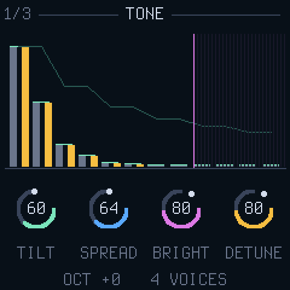
TONEThe partials as bars: TILT the slope, SPREAD odd against even, BRIGHT the ceiling, DETUNE the pairs.
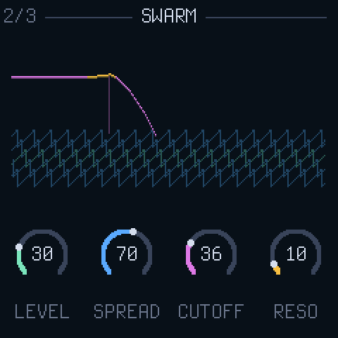
SWARMFive saws under the pad, through a low-pass that tracks the note.
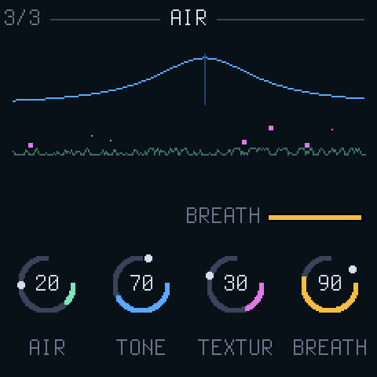
AIRWind and crackle through a band-pass, breathing with the pad.
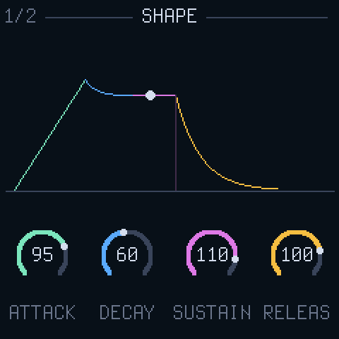
SHAPEThe envelope, with the loudest voice riding it.
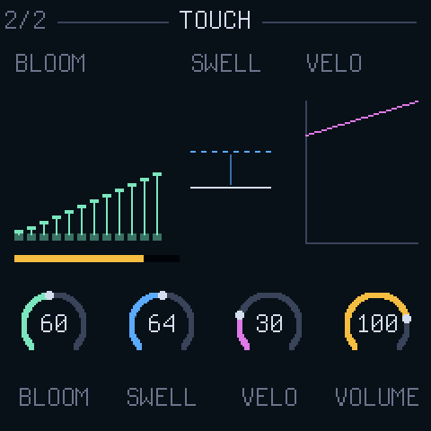
TOUCHBLOOM staggers the partials' entry, SWELL the reach of pressure, VELO how much velocity counts.
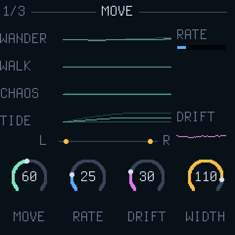
MOVEThe four sources scrolling, dim as they are and bright as MOVE lets them through.
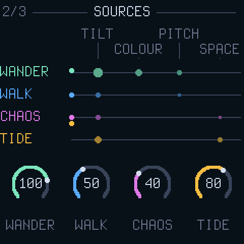
SOURCESThe matrix by its rows: a random LFO, a random walk, a Lorenz attractor, a tide over bars.
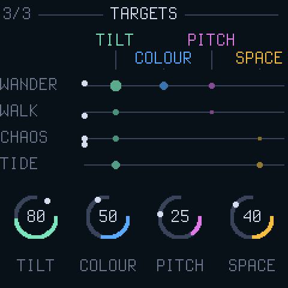
TARGETSThe matrix by its columns: how deep the movement goes into TILT, COLOUR, PITCH and SPACE.
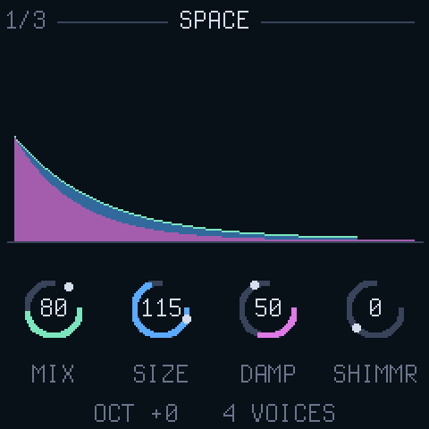
SPACEThe plate's tail, the highs under it falling faster, sparks for SHIMMER.
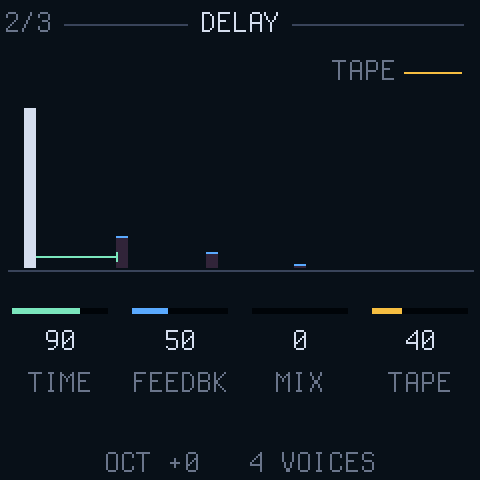
DELAYThe repeats: TIME, FEEDBACK, MIX, and TAPE leaning them over.
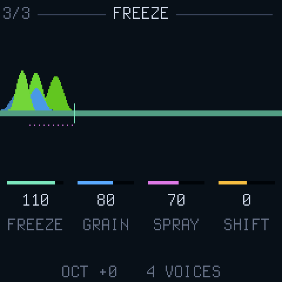
FREEZEThe delay line held, and the grains playing off it, live.
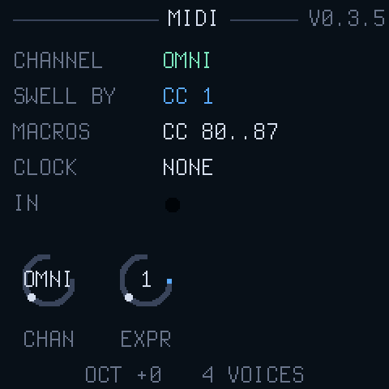
MIDIThe channel, what swells the pad, the clock, a light for every message.
Twelve places to start
The PRESETS encoder, or a program change. Sixteen USER slots follow them.
DEEPsix seconds to arrive, half a minute to leave, everything moving
TIDEthe tide driving the space over minutes
CHOIRdetuned pairs, a little swarm under, wide
ICEbright and hollow, the air crackling, a shimmer an octave up
STORMthe air at full, chaos into the tone, tape echo feeding back
SWARMthe saws loud and resonant, every partial drifting
SUBthe fundamental alone over a low swarm
ORGANinstant on, instant off, full even partials
GLASSa struck bell, odd partials, falling while held
MALLETdarker and shorter, with a tape echo
PLUCKthe shortest, swarm-bright, an echo behind it
The panel
KNOB 1..4the page's four controls, each in its colour
PRESETSthe presets, on any page
EDITTONE, SWARM, AIR
ENVSHAPE, TOUCH
LFOMOVE, SOURCES, TARGETS
FXSPACE, DELAY, FREEZE
HOMEthe sky
GLOMIDI
ALGORITHMthe group's other pages; on HOME, a pitch bend that springs back
SELECTpressure, with no aftertouch to press: the swell
PLAYlatch: a drone with no hands on the keys
RECheld, FREEZE at full: catch the moment, let go of the keys, play over it
SEQthe autopilot: nine controls wander slowly round where they are set
ARPmorph to scene B over four seconds, and back; held, PRESETS picks B
SELcut to the other scene
SAVEkeep the sound: SAVE, PRESETS to a USER slot, SAVE
OCT− OCT+the octave; both at once silences everything
Over MIDI
CC 80..87
the eight macros, in the Circuit Tracks' order: MOVESPACEAIRTILTWIDTHDRIFTFREEZEBLOOM
Channel pressure, or an expression CC
swells the pad open, as far as SWELL allows
Velocity
the level, as much as VELO says
Program change
a preset
Clock, start
the delay's sync, and the tide's bars
Sustain, pitch bend, CC 7
as you would expect
Install
From the install page in Chrome or Edge over USB, or from the FM-1 Firmware Hub. The rescue, OCT− held at power-on, is always there, and any other firmware installs over AURORA the same way.
In a dawless rig
Sequencer MIDI out into the FM-1's TRS jack (type A). Set the channel on the MIDI page or leave it OMNI, hold chords, send the macros, let the movement do the rest.
Credits and licence
By twochannels, GPL-3.0, on the platform of CS-1: Dinghy (Sven Trogus), Felucca and SLOOP's hardware layer (Leo Kuroshita, Hügelton Instruments), FM-106's dual-core worker (PattF), Felucca's web installer.